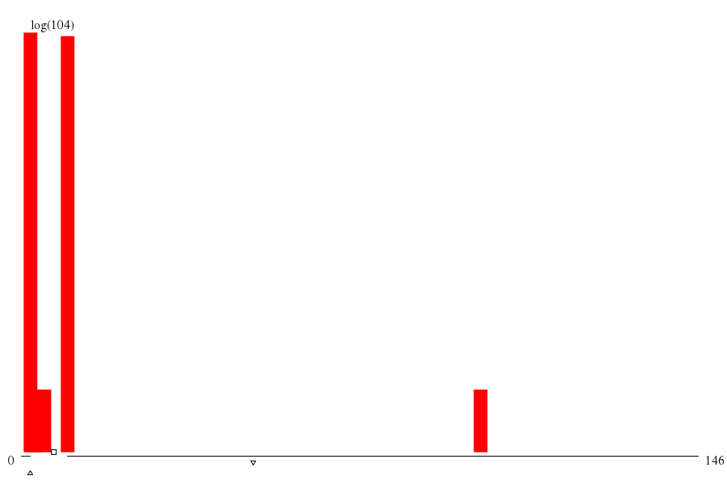

|  | ||
| maxs | mins | |
|
(0.summ) 146 |
(1.summ) 1 |
|
|
(108.su) 99 |
(103.su) 2 |
|
|
(107.su) 99 |
(111.su) 2 |
|
|
(104.su) 57 |
(109.su) 2 |
|
|
(2.summ) 10 |
(110.su) 2 |
| memory (MB) | mode ▵ | μ ▫ | (μ+σ)/μ | 1st alloc. max value | 1st alloc. max through ▿ | 1st alloc. min waste |
| -- 2.097 xE6 |
-- 7.340 xE6 |
-- 2.849 |
throu: 1.000 waste: 43.25%
alloc: 153.092 xE6 |
throu: 1.793 waste: 40.30%
alloc: 52.429 xE6 |
throu: 1.793 waste: 40.30%
alloc: 52.429 xE6 |